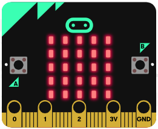

サンプルプログラム (Rubyクラスライブラリ)
1. 実行方法
(1)サンプルプログラムのダウンロード
下記の zipファイルをダウンロードして、適当な作業用ディレクトリに各サンプルファイルを展開してください。
(このページの「サンプル紹介」からも各プログラムのソースを参照することができます)
sample_console.zip
(このページの「サンプル紹介」からも各プログラムのソースを参照することができます)
sample_console.zip
(2)シリアルポート(デバイス)の確認と環境変数の設定
サンプルファイルをダウンロードした作業用ディレクトリでコンソール(ターミナル)を開き、
下記の内容を参照して環境変数「MB_PORT」を設定してください。
→ シリアルポート(デバイス)の確認
→ 環境変数の設定
下記の内容を参照して環境変数「MB_PORT」を設定してください。
→ シリアルポート(デバイス)の確認
→ 環境変数の設定
(3)各サンプルプログラムの実行
環境変数を設定したコンソール(ターミナル)上から
Rubyコマンドで各サンプルプログラムを実行してください。
※なお、rbbitコマンドによる WebSocketサーバの機能が動作している場合は
Rubyコマンドで各サンプルプログラムを実行してください。
※なお、rbbitコマンドによる WebSocketサーバの機能が動作している場合は
exitで終了させておいてください。- Windows (シリアルポートが COM5の場合の「s1_heart.rb」実行例)
> set MB_PORT=COM5
> ruby s1_heart.rb> ruby s1_heart.rb COM5 (この場合は環境変数の設定は不要)- macOS (シリアルデバイスが /dev/tty.usbmodem14132の場合の「s1_heart.rb」実行例)
$ export MB_PORT=/dev/tty.usbmodem14132
$ ruby s1_heart.rb$ ruby s1_heart.rb /dev/tty.usbmodem14132 (この場合は環境変数の設定は不要)- Linux (シリアルデバイスが /dev/ttyACM1の場合の「s1_heart.rb」実行例)
$ export MB_PORT=/dev/ttyACM1
$ ruby s1_heart.rb$ ruby s1_heart.rb /dev/ttyACM1 (この場合は環境変数の設定は不要)2. サンプルプログラム紹介
(1)点滅するハート
| s1_heart.rb |
ハートマークが ５回点滅します。 |
(2)名札
| s2_myname.rb |
「rbbit」の文字が表示されます。 |
(3)スマイリー
s3_smiley.rb |
[A]ボタンを押すと笑顔、[B]ボタンで渋面が表示されます。 [A]ボタンと[B]ボタンを同時に押すと「〇」が表示されます。 15秒後に自動的に終了します。 |
(4)さいころ１
| s4_dice1.rb |
micro:bitを傾けたり軽く振ったりすると、１～６の数字がランダムに表示されます。 [B]ボタンを押すと終了します。 |
(5)さいころ２
| s4_dice2.rb |
micro:bitを傾けたり軽く振ったりすると、さいころの目がランダムに表示されます。 [B]ボタンを押すと終了します。 |
(6)ブリンカー
| t1_blinker.rb |
大きい四角形と小さい四角形が交互に５回ずつ表示されます。 |
(7)ローテーション
| t2_rotation.rb |
点灯する LEDがグルグル走り回ります。 |
(8)タイマー
t3_timer.rb |
LEDの表示が 9, 8, 7...とカウントダウンしていき、0までいくと終了します。 |
(9)アルファベット
t4_alphabet.rb |
[A]ボタンを押すたびに、アルファベットが１文字ずつランダムに表示されます。 [B]ボタンを押すと終了します。 |
(10)スイッチ
| t5_switch.rb  |
[A]ボタンを押している間は LEDが点灯し、[A]ボタンを離すと消灯します。 [B]ボタンを押すと終了します。 |
(11)ドラゴンクエスト演奏
| t6_dq.rb |
「ドラゴンクエスト」のテーマ曲が演奏されます(約30秒間)。 micro:bitにスピーカーの装着が必要です。 |
(12)ボール
| t7_ball.rb |
micro:bitを前後左右に傾けると、点灯しているLEDが低い方に移動していきます。 [B]ボタンを押すと終了します。 |
(13)光量計
| t8_light.rb |
明るさに応じて LEDの点灯個数が変化します。 [B]ボタンを押すと終了します。 |
(14)プログレスバー
| t9_progress.rb |
[A]ボタンを押すと LEDの点灯領域が増えていきます。 [B]ボタンを押すと LEDの点灯領域が減っていきます。 [A]ボタンと[B]ボタンを同時に押すと終了します。 |